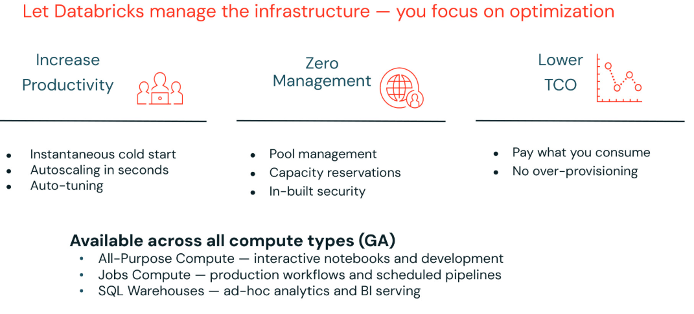

Section 6 · Troubleshooting, Monitoring and Optimization · Quelle: Kurs 7, Kapitel 4
Selbst der bestoptimierte Code läuft nur so gut wie die Infrastruktur, auf der er ausgeführt wird. Dieses abschließende Kapitel des Themenordners behandelt die Wahl des richtigen Compute-Typs, die Photon-Engine, Spot-Instances zur Kostensenkung, Autoscaling sowie Serverless Compute – und ordnet ein, wie sich die Empfehlungen aus den vorherigen Kapiteln (Datenlayout, Skew/Shuffle/Spill) dazu verhalten.
Photon ist Databricks' nativ in C++ implementierte, vektorisierte Query-Engine, die SQL- und DataFrame-Workloads erheblich beschleunigt. Sie wird ohne Codeänderungen genutzt – unabhängig davon, ob mit SQL, Python, Scala oder R gearbeitet wird – und deckt Exploration, ETL, große wie kleine Datenmengen, Low-Latency- und High-Concurrency-Szenarien sowie Batch- und Streaming-Workloads über eine einheitliche Engine und ein einheitliches API-Set ab. Nach Angaben von Databricks erreicht Photon bei SQL-Workloads (TPC-DS-Benchmark) ein bis zu 5-fach besseres Preis-Leistungs-Verhältnis gegenüber anderen Cloud-Data-Warehouses.
Spot-Instances sind vom Cloud-Anbieter zu vergünstigten Preisen angebotene, derzeit ungenutzte Rechenkapazitäten – mit dem Risiko, dass der Anbieter sie bei steigender Nachfrage kurzfristig zurückfordert. Für unkritische, Ad-hoc- oder geteilte Cluster eignen sie sich hervorragend zur Kostensenkung. Eine bewährte Konfiguration: den Driver auf On-Demand laufen lassen (er sollte niemals als Spot-Instance konfiguriert werden), während die Worker als Spot-Instances laufen – werden diese vom Anbieter zurückgefordert, bleibt der Job dank des stabilen Drivers zumindest kontrolliert am Leben. Für Workloads mit strengen SLAs empfiehlt sich zusätzlich ein automatischer Fallback auf On-Demand-Instanzen, falls keine Spot-Kapazität verfügbar ist.
| SLA-Anforderung | Empfehlung |
|---|---|
| Unkritische Jobs | Driver On-Demand, Worker als Spot-Instances |
| Workloads mit strengen SLAs | Spot-Instances mit Fallback auf On-Demand |
Wichtig: Die Ersparnis und Ausfallrate unterscheiden sich stark je Instanztyp, Region und aktueller Marktlage – ein pauschaler Vergleich oder feste Prozentwerte lohnen sich nicht, da sich diese laufend ändern. Vor einer produktiven Spot-Konfiguration empfiehlt es sich, die aktuelle Ersparnis und Unterbrechungshäufigkeit für den konkreten Instanztyp und die konkrete Region direkt beim Cloud-Anbieter nachzuschlagen.
Autoscaling passt die Clustergröße automatisch an die aktuelle Auslastung an: Bei steigender Nachfrage werden zusätzliche Worker-Knoten hinzugefügt, bei sinkender Nachfrage wird der Cluster wieder verkleinert, was Kosten gegenüber einer statisch dimensionierten Größe spart. Für Entwicklung und Ad-hoc-Analysen empfiehlt sich meist eine großzügige Obergrenze; für produktive Batch-Jobs mit vorhersehbarem Datenvolumen reicht häufig eine feste Clustergröße mit einer Obergrenze für gelegentliche Lastspitzen. Autoscaling wird auch für Streaming-Workloads und Spark Declarative Pipelines unterstützt.
| Einsatzzweck | Autoscaling-Empfehlung |
|---|---|
| Ad-hoc-Nutzung / Business-Analysen | Große Spannweite |
| Produktive Batch-Jobs | Meist nicht nötig, ggf. Puffer nach oben |
| Streaming | In Spark Declarative Pipelines verfügbar |
Klassisches Compute erfordert manuelle Entscheidungen zu Instanztypen, Autoscaling-Grenzen, Spot-Konfiguration und Photon. Serverless Compute stellt diese Fragen anders: Was, wenn nichts davon manuell verwaltet werden muss? Serverless basiert auf drei Kernversprechen – höhere Produktivität durch sofortigen Kaltstart und Autoscaling innerhalb von Sekunden, kein manuelles Pool- oder Kapazitätsmanagement mehr, sowie niedrigere Gesamtbetriebskosten, da ausschließlich tatsächlich genutzte Rechenzeit bezahlt wird. Serverless ist inzwischen für alle drei Compute-Typen – All-Purpose Compute, Jobs Compute und SQL Warehouses – generell verfügbar (GA), nicht mehr nur als Preview.

Ein wichtiger Vorbehalt: Serverless übernimmt die Infrastrukturebene, nicht aber die Optimierungsebene. Enthält der Code exzessive Shuffles, ist er auch auf Serverless-Compute langsam. Ist das Datenlayout schlecht – viele kleine Dateien, kein Liquid Clustering, kein Data Skipping – behebt Serverless dieses Problem nicht automatisch. Photon treibt weiterhin die zugrunde liegende Query-Engine an. Kurz gesagt: Databricks übernimmt die Infrastruktur, Entwicklerinnen und Entwickler bleiben weiterhin für Code und Datenlayout verantwortlich – alle in diesem Themenordner behandelten Optimierungstechniken (Datenlayout, Liquid Clustering, Skew/Shuffle/Spill-Vermeidung) gelten auf Serverless Compute unverändert weiter.